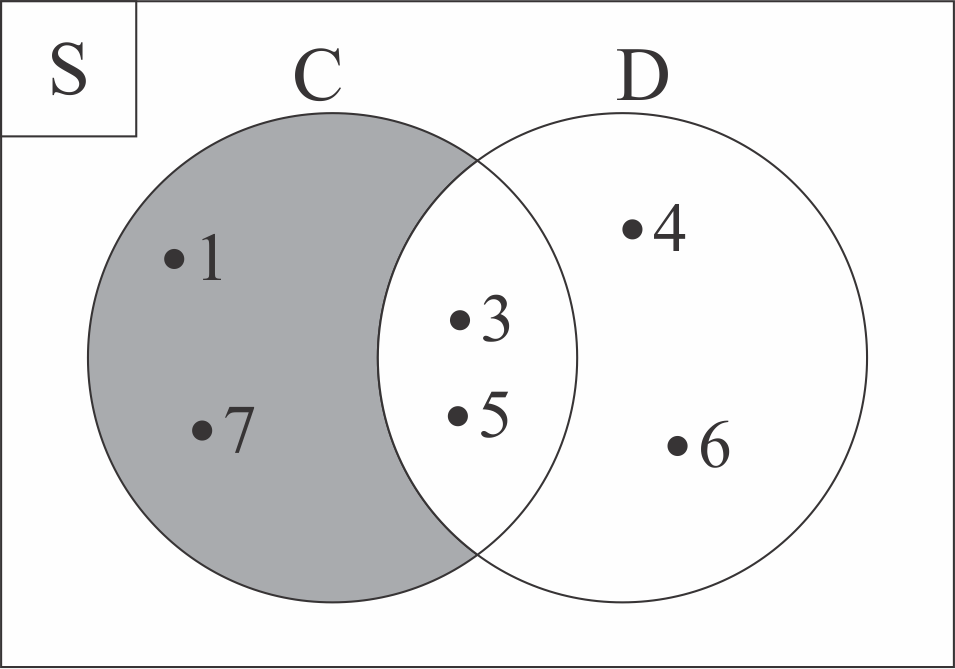
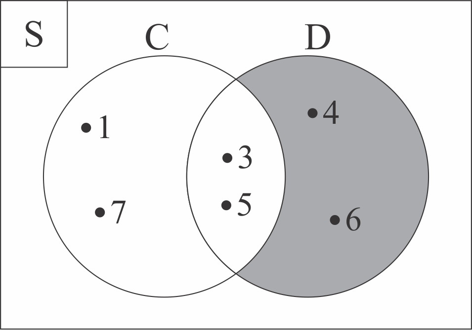

4.3 SELISIH DUA HIMPUNAN

Kemudian, bagaimana diagram venn dari selisih dua himpunan? Perhatikanlah Tabel 4.3.1 di bawah ini!
| Diketahui C = {1, 3, 5, 7} dan D = {3, 4, 5, 6} | |
|---|---|
| Selisih Dua Himpunan | Diagram Venn |
|
C − D Anggota himpunan C yang juga merupakan anggota himpunan D dihilangkan. C = {1, Sehingga, C − D = {1, 7} |
 Area lingkaran C yang tidak termasuk lingkaran D diarsir, untuk menandakan bahwa area tersebut merupakan selisih dari himpunan C terhadap himpunan D. |
|
D − C Anggota himpunan D yang juga merupakan anggota himpunan C dihilangkan. D = { Sehingga, D − C = {4, 6} |
 Area lingkaran D yang tidak termasuk lingkaran C diarsir, untuk menandakan bahwa area tersebut merupakan selisih dari himpunan D terhadap himpunan C. |
Untuk lebih lengkapnya mengenai proses menggambar diagram venn dari selisih dua himpunan, perhatikanlah animasi interaktif di bawah ini!
 Petunjuk (klik untuk menyembunyikan petunjuk)
Petunjuk (klik untuk menyembunyikan petunjuk)- Tekan icon
 . Jika animasi belum muncul, harap tunggu sebentar ya 😄
. Jika animasi belum muncul, harap tunggu sebentar ya 😄 - Tekan tombol "Mulai" pada layar animasi interaktif untuk memulai. Perhatikanlah setiap arahan yang ditampilkan
- Praktikanlah juga pada buku catatanmu 😄

*catatlah ke dalam buku catatanmu 😄
Rumus untuk menentukan banyak selisih dari himpunan A terhadap himpunan B : n(A − B) = n(A) − n(A ∩ B)